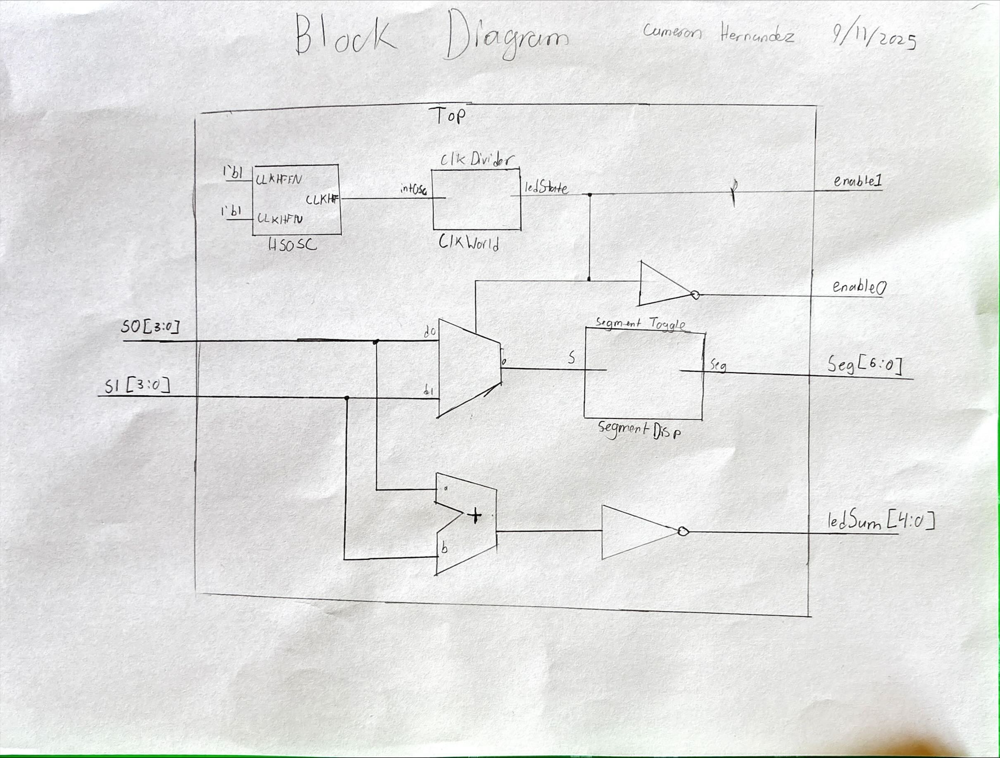
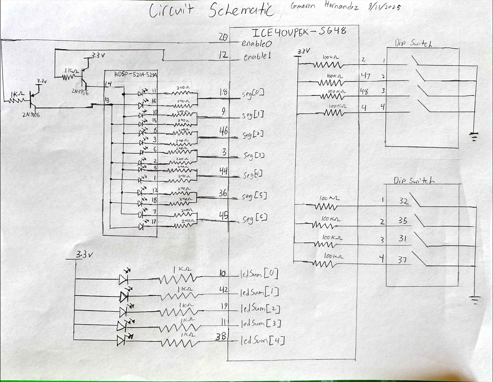
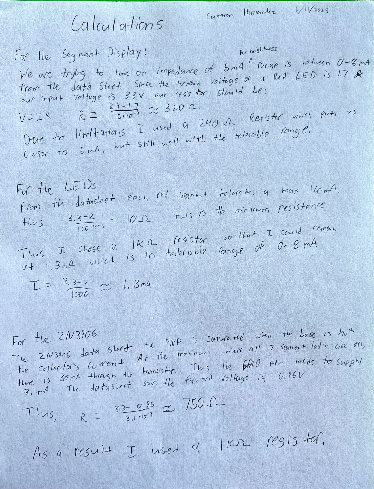
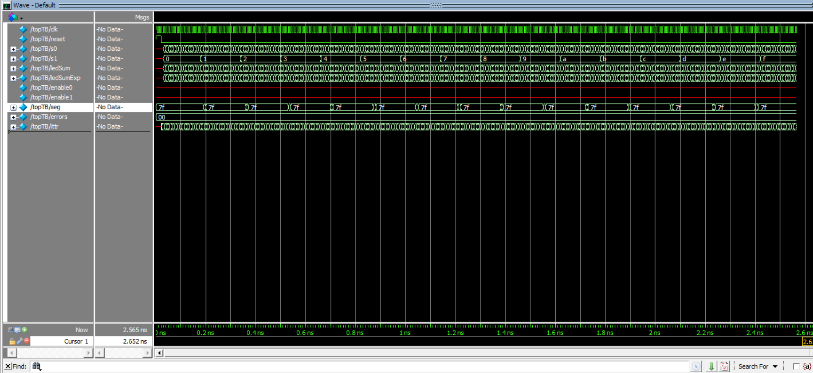
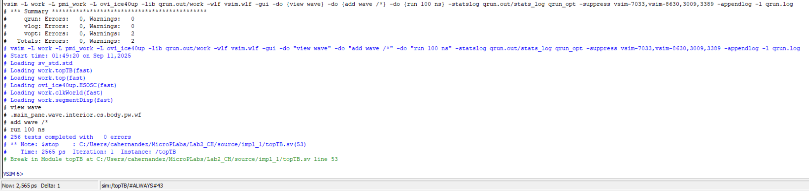
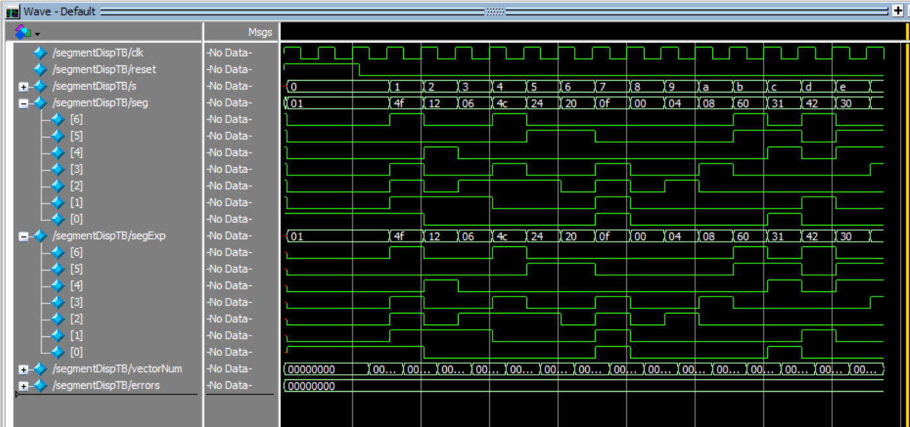
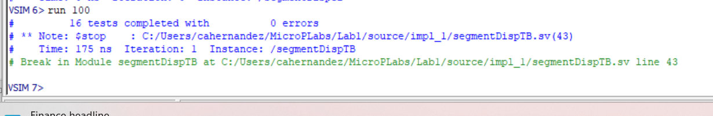

Lab 2: Multiplexed 7-Segment Display
Hours Spent:
34
Introduction:
This lab required the use of time multiplexing to efficiently use I/O pins on the FPGA board. This involved a time-multiplexing scheme driving two seven-segment displays shorted together using a single set of FPGA I/O pins. This required the use of two PNP switches which worked opposite where if one was driven high, the other was low. To cycle between the displays a 60Hz clock divider was used to determine which PNP was active, allowing for the control of the two different display screens.
The display screens function like they did in the previous lab, where inside leds would activate depending on the inputs from a 4 bit DIP Switch. Here two DIP Switches are used to control a corresponding screen. The segment display outputs a hexadecimal value corresponding to the value imputed from the DIP Switch.
Furthermore, five leds display the binary numerical value of the sum of the two DIP Switches. Depending on the configuration of the DIP switches the binary representation value could range between 0+0 to F + F.
Technical Documentation: The source code for this project can be found in the associated Github repository here: GitHub_Lab2_CH

Block Diagram:

Figure 2 illustrates a block diagram of the architecture of the design for lab 2. The top module takes in the inputs for the two 4-bit DIP Switches. Here they go into a mode which selects which dipswitch will output to the segment display module which controls the outputs of the leds on the segment display. This mux is governed by the bit value ledState which flips every 60Hz as instructed by the clkWorld module which accepts a high speed oscillation clock. Furthermore, ledState is what determines which enable will be activated.
Going back to the DIP switches, their logic is also passed into an adder block which combines the binary values of the switches into a 5 bit value. This is then negated as we are in active low. Lastly, leaving the segmentDisplay module we have our seven bit value seg which is what determines which led lights will be activated on the segment display.
Schematic:

Figure 3 illustrates a the schematic of the system where two sets of four switches which connect into the FPGA block ICE40UP5K-S648. Each switch connects to a corresponding pin where there is a 100KΩ internal resistor that then connects to the 3.3V supply. Output from the FPGA pins, specifically pins 10, 42, 19, 11 and 38 connect to an 5 leds which each have a 1kΩ pull down resistor. A 3.3V from the FPGA powers the HD5P-521A-523A seven segment display which internally has 14 leds. These leds first connect to a 240Ω resistor to allow for a minimal current to enter the FPGA as well as allowing for a bright display. These pins are then shorted to their corresponding match and then inputed into the FPGA
Calculations:

Results:
The design met all the intended design objectives. A testbench was written to ensure that the three leds flash when their requirements are met as well as ensure that the fourteen different leds on the segment display output correctly based on the input logic of the DIP switches.




AI Prototype:
For the AI prototype I asked ChatGPT if it could Write SystemVerilog HDL to time multiplex a single seven segment decoder (that decodes from four bits to a common anode seven segment display) to decode two sets of input bits and drive two sets of seven output bits.
It thought for four seconds and then gave me this:
// single file: dual_muxed_7seg.sv // Single combinational 7-seg decoder + time-multiplexing top module // Segment bit order: {a,b,c,d,e,f,g} (MSB a, LSB g)
`timescale 1ns/1ps
module seven_seg_decoder #( parameter logic ACTIVE_LOW = 1’b1 // set 1 for common-anode (active low segments) ) ( input logic [3:0] nibble, output logic [6:0] seg // {a,b,c,d,e,f,g} ); logic [6:0] seg_raw;
always_comb begin
// Default: blank (all off)
seg_raw = 7'b111_1111;
case (nibble)
4'h0: seg_raw = 7'b111_1110; // a b c d e f on, g off (note: we'll invert for active_low below)
4'h1: seg_raw = 7'b011_0000; // segments b c
4'h2: seg_raw = 7'b110_1101; // a b d e g
4'h3: seg_raw = 7'b111_1001; // a b c d g
4'h4: seg_raw = 7'b011_0011; // b c f g
4'h5: seg_raw = 7'b101_1011; // a c d f g
4'h6: seg_raw = 7'b101_1111; // a c d e f g
4'h7: seg_raw = 7'b111_0000; // a b c
4'h8: seg_raw = 7'b111_1111; // all segments
4'h9: seg_raw = 7'b111_1011; // a b c d f g
4'hA: seg_raw = 7'b111_0111; // a b c e f g (A)
4'hB: seg_raw = 7'b001_1111; // c d e f g (lowercase b)
4'hC: seg_raw = 7'b100_1110; // a d e f (C)
4'hD: seg_raw = 7'b011_1101; // b c d e g (lowercase d)
4'hE: seg_raw = 7'b100_1111; // a d e f g (E)
4'hF: seg_raw = 7'b100_0111; // a e f g (F)
default: seg_raw = 7'b000_0000; // all off as safety (shouldn't happen)
endcase
// NOTE: above bit patterns assume '1' means segment ON.
// If your hardware expects active-low (1 = off, 0 = on), we invert here.
if (ACTIVE_LOW)
seg = ~seg_raw;
else
seg = seg_raw;
endendmodule
// Top module: time-multiplex single decoder to produce two sets of 7 outputs. module dual_muxed_7seg #( parameter integer CNT_WIDTH = 16, // width of refresh counter: adjust for refresh period parameter logic ACTIVE_LOW = 1’b1 // match decoder’s active level (common anode -> 1) ) ( input logic clk, // system clock input logic rst_n, // active-low reset input logic [3:0] nibble0, // first nibble to show input logic [3:0] nibble1, // second nibble to show output logic [6:0] seg_out0, // decoded segments for digit0 {a,b,c,d,e,f,g} output logic [6:0] seg_out1 // decoded segments for digit1 );
// refresh counter to generate a slow select signal
logic [CNT_WIDTH-1:0] counter;
logic select; // 0 => nibble0, 1 => nibble1
// single decoder output
logic [6:0] decoder_out;
// instantiate the single decoder
seven_seg_decoder #(.ACTIVE_LOW(ACTIVE_LOW)) decoder_inst (
.nibble(decoder_selected_nibble()),
.seg(decoder_out)
);
// function to return selected nibble (combinational)
function automatic logic [3:0] decoder_selected_nibble ();
decoder_selected_nibble = select ? nibble1 : nibble0;
endfunction
// refresh counter
always_ff @(posedge clk or negedge rst_n) begin
if (!rst_n) begin
counter <= '0;
end else begin
counter <= counter + 1'b1;
end
end
// choose select bit from the MSB of the counter (gives ~clk/2^(CNT_WIDTH-1) refresh)
always_comb begin
select = counter[CNT_WIDTH-1];
end
// latch decoder output into the appropriate output register on each clock edge.
// When select==0 the decoder is producing nibble0 -> store to seg_out0.
// When select==1 the decoder is producing nibble1 -> store to seg_out1.
always_ff @(posedge clk or negedge rst_n) begin
if (!rst_n) begin
seg_out0 <= '0;
seg_out1 <= '0;
end else begin
if (select) begin
seg_out1 <= decoder_out;
end else begin
seg_out0 <= decoder_out;
end
end
endendmodule
I was very surprised at how quickly it responded so I was eager to test and see if this code would work. To my surprise, the code did synthesize but then failed in the routing as I think I need to set up the FPGA ports. If I spent time actually defining the ports and wired things up properly I belive that this code actually would work. I am surprised by its syntax as it uses <= inside always ff blocks which I believe is not entirely necessary. Also, the comments are really well crafted and properly ordered. I think that this code did a really good job. For the next assignment I asked Chat to write SystemVerilog HDL to time multiplex a single seven segment decoder (that decodes from four bits to a common anode seven segment display) to decode two sets of input bits and drive two sets of seven output bits. Use the seven segment decoder and oscillator provided in the attached files.
It gave me this: //====================================================== // Dual time-multiplexed 7-segment display driver // Uses: provided seven_seg_decoder.sv and oscillator.sv //======================================================
module dual_muxed_7seg ( input logic clk, // system clock input logic rst_n, // active-low reset input logic [3:0] nibble0, // first input digit input logic [3:0] nibble1, // second input digit output logic [6:0] seg_out0, // decoded outputs for digit0 output logic [6:0] seg_out1 // decoded outputs for digit1 );
// signal from oscillator (acts as a refresh toggle)
logic sel;
// output of single decoder
logic [6:0] seg_temp;
// oscillator instance (provided in your files)
oscillator u_osc (
.clk (clk),
.rst_n (rst_n),
.sel (sel) // toggles at refresh rate
);
// single 7-seg decoder instance (provided in your files)
seven_seg_decoder u_dec (
.nibble (sel ? nibble1 : nibble0),
.seg (seg_temp)
);
// capture decoder result into the appropriate output
always_ff @(posedge clk or negedge rst_n) begin
if (!rst_n) begin
seg_out0 <= '0;
seg_out1 <= '0;
end else begin
if (sel)
seg_out1 <= seg_temp; // update digit1
else
seg_out0 <= seg_temp; // update digit0
end
endendmodule
This code did not synthesize and gives an error that says an issue with .nibble.